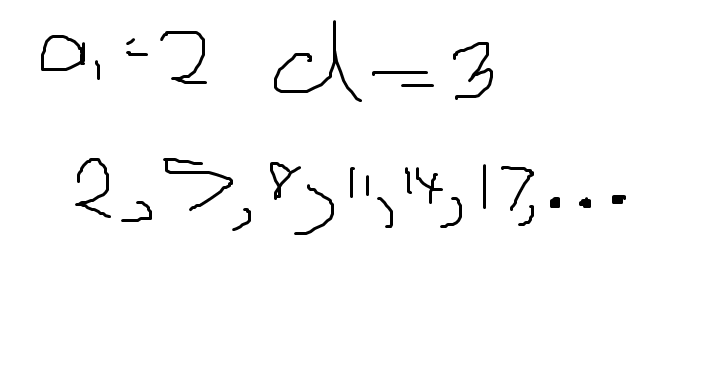
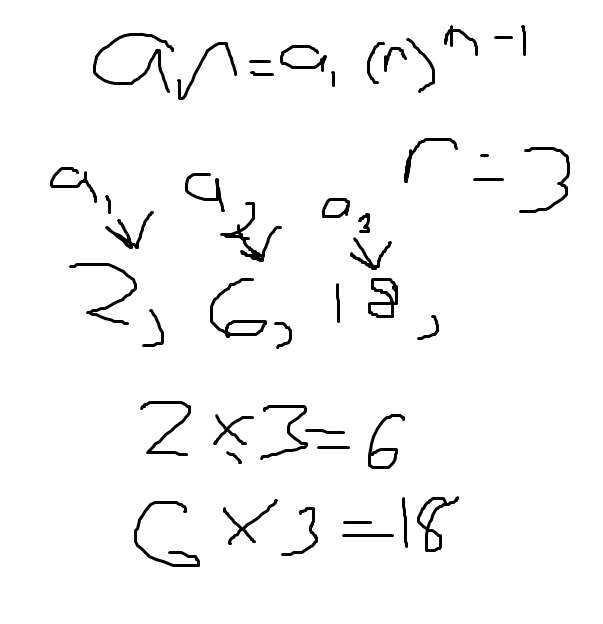
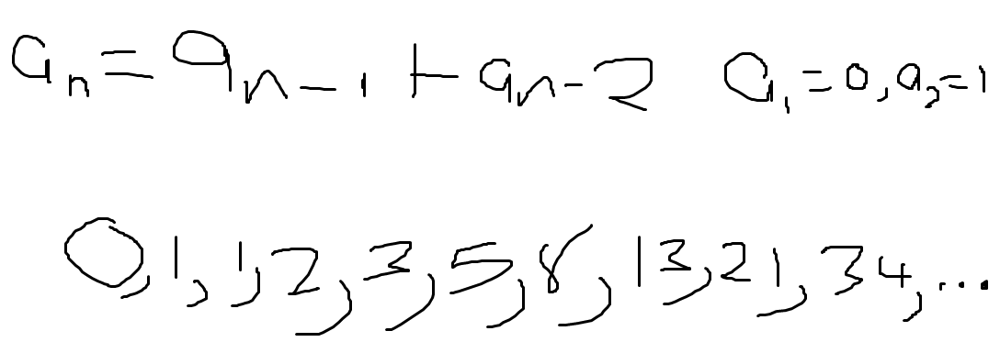
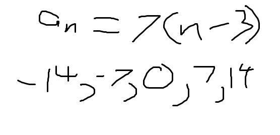
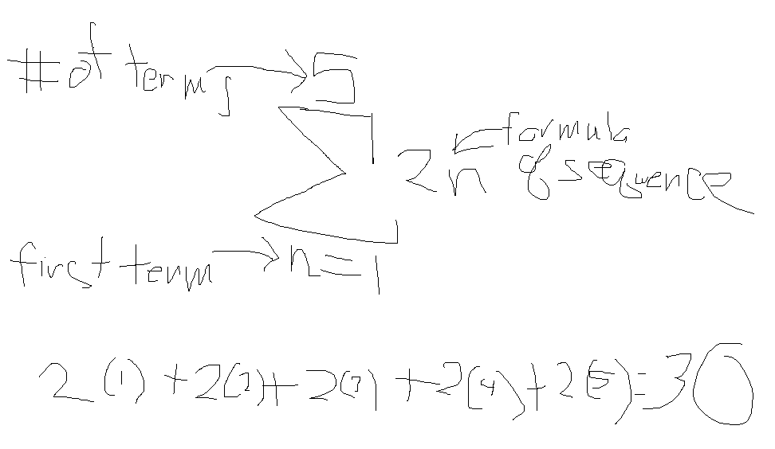

Arithmatic sequences, geometric sequences, recursive formulas, explicit formulas, and summation. The first two are types of sequences, defined by how their terms are found. Recursive and explicit formulas define how to find each term. Summation is finding a certain term or the sum of many terms.
Arithmatic sequences use a set difference between each term, for example, if a1 is equal to 2 and the common difference is 3, the next term would be 5.
Geometric sequences use the previous term and a set ratio that each next term is found with. If the ratio is two, the previous term get multiplied by two to find the next term. An example:
Recursive formulas are sequences that use previous terms to find the next one. One very good example is the Fibonacci sequence.
In this sequence, the previous two terms are added together in order to make the next term of the sequence. a1 is equal to 0 and a2 is equal to 1. Adding the two terms together, you get 1, 1 and 1 makes 2, and so on.
An explicit formula does not use any previous terms in order to find the next ones, but rather uses a formula to make the first term a fuction of n.
Summation is a method to find a specific term of a sequence by using a formula that takes the amount of terms, the first term, and the formula for the sequence and evaluating.
\ 